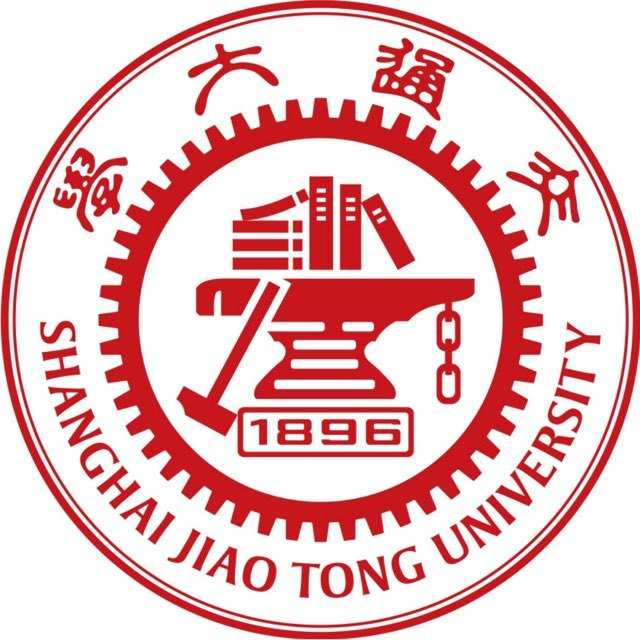
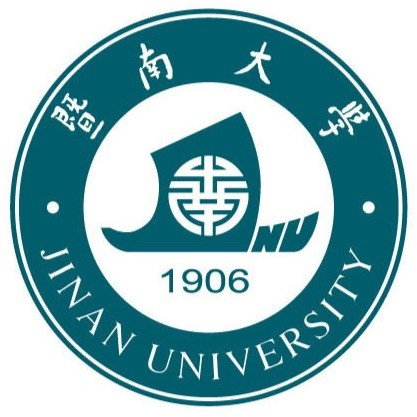
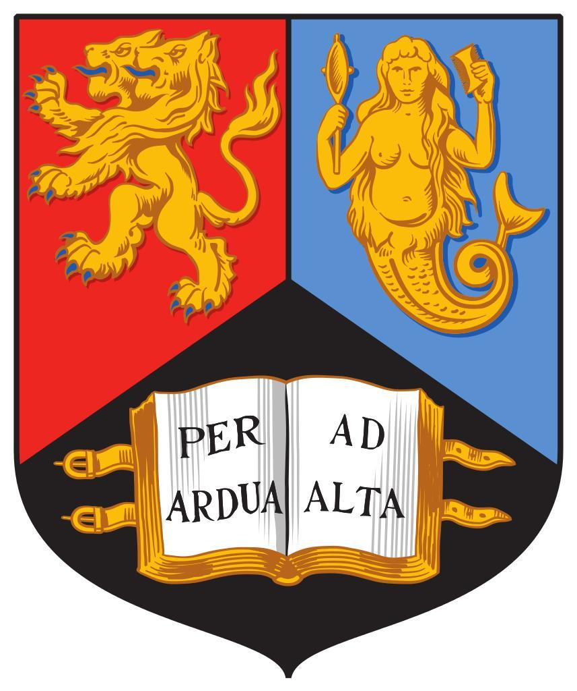
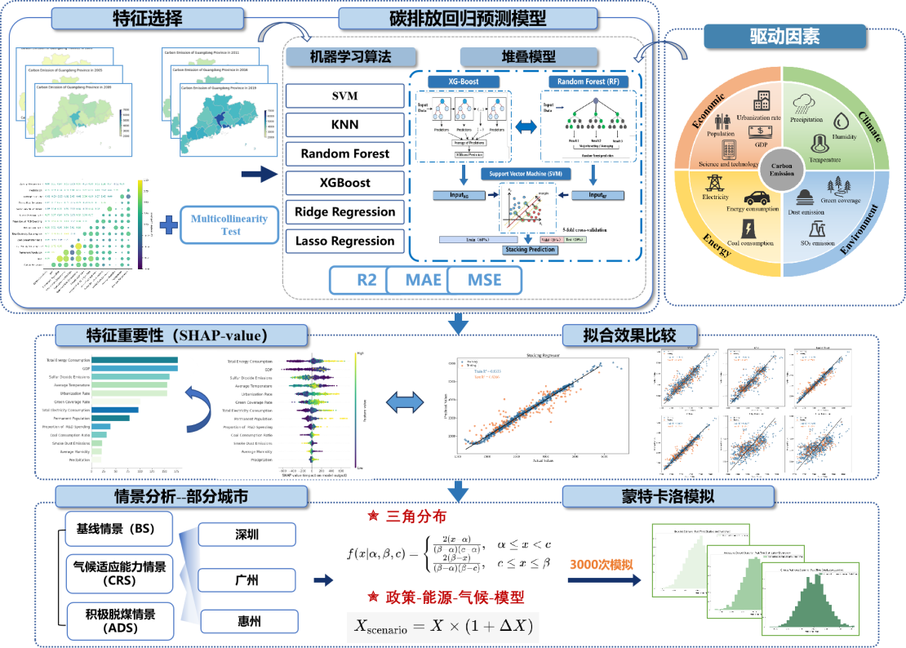
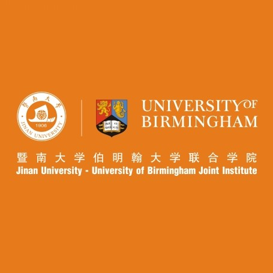

👤 About Me
我毕业于暨南大学经济统计学专业（与伯明翰大学数学与应用数学双学位），GPA 4.13/5。 已推免拟录取至上海交通大学公共卫生与预防医学专业攻读硕士学位（2026年秋季入学），师从李国红院长。
我的未来研究研究将聚焦于智慧医疗、老年与婴幼儿健康、全球健康与全健康。 熟练掌握 R 与 Python，擅长统计建模、机器学习与数据挖掘。 截至目前，以第一/第二作者身份在CSSCI、SSCI 及 SCI 发表论文 6 篇，另有多篇在投。 曾主持省级大创项目 2 项、攀登计划项目 1 项。曾获比亚迪、东莞信托等多项奖学金。
🔥 News
- 2026.07 🎉 以第二作者身份参与的文章在 Journal of Environmental Sciences（SCI Q1）正式上线
- 2026.06 🎉 以共同通讯作者身份参与的文章在 Foods（SCI Q1）正式上线
- 2026.06 🎉 毕业论文获评暨南大学伯明翰大学联合学院优秀毕业论文
- 2026.06 🎉 获评暨南大学优秀毕业生、暨南大学"有作为、有贡献"毕业生
- 2025.10 🎉 获推免拟录取至上海交通大学公共卫生与预防医学专业攻读硕士
📖 Education
-

2026.09 - 2029.06 上海交通大学 | 硕士（推免拟录取）| 公共卫生与预防医学 | 导师：李国红院长
🏅 夏令营优秀营员 · 推免生一等学业奖学金 -

2022.09 - 2026.06 暨南大学 | 本科 | 经济统计学 | GPA 4.13/5
🏅 比亚迪奖学金 · 东莞信托奖学金 · 暨南大学优秀学生奖学金 · 优秀学生骨干 · 优秀毕业生 -

2022.09 - 2026.06 伯明翰大学 (University of Birmingham) | 本科 | Applied Mathematics with Statistics
🏅 伯明翰大学暑期科研奖学金
核心课程：多元微积分与向量分析（98）、随机过程（96）、统计软件（95）、整数规划及组合优化（95）、 抽样技术（94）、金融经济统计方法（94）、金融数学（94）、数学经济建模（93）
📝 Publications (* 通讯作者)


📌 另有多篇论文在投。截至目前以第一、第二、第三作者身份在 CSSCI、SSCI、SCI 期刊共发表论文 6 篇。
🔬 Projects
🏗️ 基于机器学习堆叠模型和政策模拟的双碳目标路径探索——以广东省为例
2025.03 - 2027.03 广东省科技创新战略专项资金（攀登计划）立项（pdjh2025bg035） | 资助 3 万 | 主持

背景：对广东省碳排放的研究仍然缺乏对经济、气候和环境影响等普遍和地区特定多维因素综合影响的系统探索。大多数现有研究仅以单一方式分析碳排放因素和预测，无法揭示复杂的非线性关系。
贡献：对广东省碳排放特征及其影响因素进行全面深入分析，开发并应用了一种创新的机器学习堆叠模型，采用可解释的 SHAP 值（博弈论）来评估各特征重要性。使用蒙特卡洛模拟方法进行不同政策情景模拟，为该地区低碳转型提供可行的政策指导。
个人职责：负责整个项目开展，撰写项目申报书，使用 Python 进行特征工程、模型构建、参数调整以及多种机器学习方法性能的比较，同时利用蒙特卡洛模拟进行情景分析。
关键词：机器学习堆叠模型 · 蒙特卡洛模拟 · SHAP · 碳排放预测 · 双碳目标
🌾 "从农田到云端"——中国全尺度农业数字水平发展评价体系与智能决策支持系统
2024.05 - 2025.05 大学生创新创业训练计划项目省级立项（S202410559033） | 主持 | 优秀结项
背景：目前仍缺乏一套科学、系统的评价体系来衡量各区域农业数字化的实际进展和效果。传统的农业评价体系多集中于宏观指标，而对于数字化程度、信息化贡献率等新型指标的融合并不充分。
贡献：分析数字经济发展与高质量农业发展的关系，构建数字农业发展综合评价指标体系，为我国农业数字化和农村经济发展提供科学依据和实践指导。
个人职责：负责整个项目开展，撰写项目申报书，运用统计分析如相关性分析、主成分分析（PCA）、聚类分析等方法，量化评价我国各省数字农业发展水平。同时参与开发乡村振兴大数据分析云计算平台。
关键词：数字农业 · PCA · 聚类分析 · 综合评价 · 云计算平台
🎖 Honors and Awards
🏆 竞赛获奖
- 2024.12 CCF数字农业分会年会暨第二届CCF数字农业大会学生学术秀本科组 三等奖（1/1）
- 2024.10 第七届"智享杯"全国高校经管类实验教学案例大赛全国总决赛 全国三等奖（1/6）
- 2024.08 科研案例"如何对我国各省农业数字经济发展水平进行综合评价"入选中国经管实验教学案例库（1/6）
- 2024.08 2024年中国国际大学生创新大赛（原互联网+）暨南大学 金奖（5/6）
- 2023.12 / 2024.12 高教社杯全国大学生数学建模竞赛 广东省二等奖（1/3，连续两年）
- 2023.08 全国大学生节能减排社会实践与科技竞赛 全国三等奖（1/7）
- 2023.01 APMCM亚太地区大学生数学建模竞赛 三等奖（1/1）
🎓 奖学金与荣誉称号
- 2026.06 暨南大学优秀毕业生
- 2026.06 暨南大学"有作为、有贡献"毕业生
- 2025.06 上海交通大学夏令营优秀营员、推免生一等学业奖学金
- 2025.03 暨南大学伯明翰大学联合学院学术新星奖学金
- 2024.12 比亚迪奖学金
- 2024.12 东莞信托奖学金
- 2024.10 暨南大学优秀学生奖学金
- 2024.07 伯明翰大学暑期科研奖学金
- 2024.05 暨南大学优秀学生骨干荣誉称号
💼 Internship & Campus
实习经历
-

2025.12 - 2026.04 暨南大学伯明翰大学联合学院 | 兼职辅导员（学生事务部）| 广州
协助处理学生日常事务，负责新生注册、档案管理及日常咨询，服务覆盖全院四个年级。
参与策划迎新、学风建设等学院活动，负责场地协调与物资统筹，保障活动顺利开展。
搭建师生沟通渠道，定期走访宿舍开展谈心谈话，收集反馈并协助解决实际问题。 -
2024.07 - 2024.08 中国建设银行广东省分行 | 金融科技实习生（公司业务部）| 广州
参与自主创新科技金融项目的申报，撰写项目申报书；收集和整理合作公司背景信息； 利用 Python 对 S&P500 指数进行时间序列波动性预测，挖掘市场波动趋势。
校园组织经历
-
2024.07 - 2024.10
暨南大学伯明翰大学联合学院 | 新生总助班
主导策划并成功举办 10+ 场新生系列活动，为近 300 名新生提供全面的入学指导。 -
2023.06 - 2024.06
暨南大学招生宣传协会 | 综合行政部部长
全面负责年度招生宣传后勤保障，精准支持 30+ 场线上线下宣讲会，累计调配物资超 5000 份，零延误零差错。
学术会议
-
2026.05
VALSE 视觉与学习青年学者研讨会 | 武汉
-
2024.11
CCF数字农业分会年会暨第二届CCF数字农业大会 | 广州
🛠 Skills & More
编程与数据分析
- Python（统计分析、机器学习、数据挖掘）
- R（统计建模、数据可视化）
办公与工具
- Word / Excel / PowerPoint
语言能力
- 中文（母语）
- 英语四级 558、六级 525
🌟 积极参与 20 余场志愿活动，志愿时长累计超 140 小时。具有强烈好奇心、快速学习能力和敏锐洞察力， 善于从细节中发现问题并提供创新解决方案。